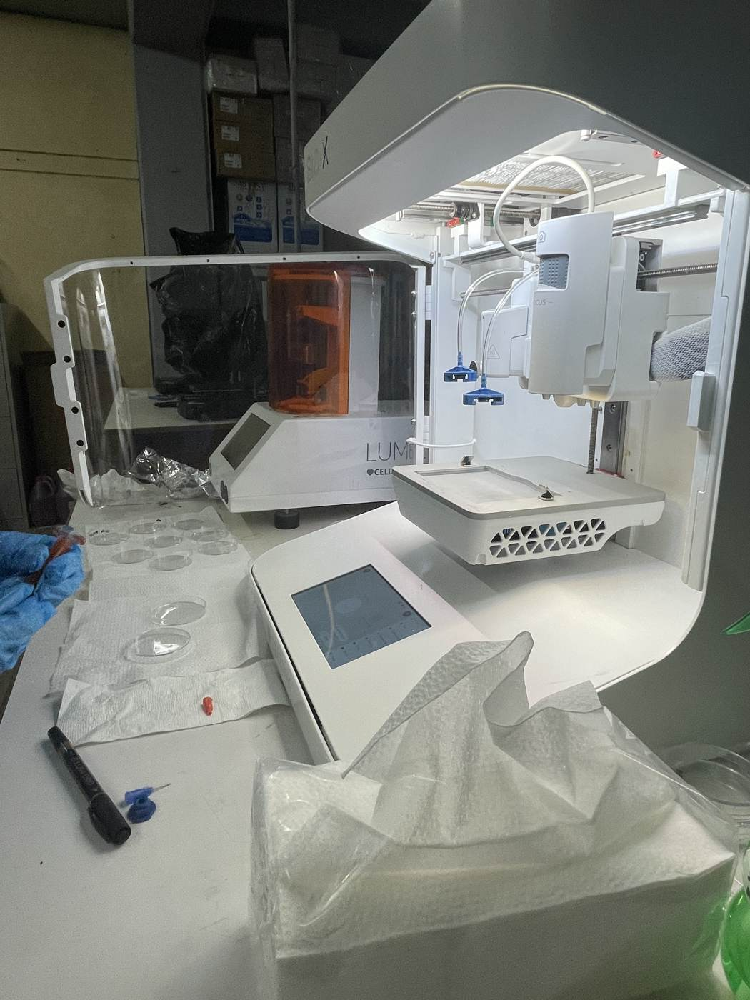

Carrageenan & Tissue Scaffold Research
November 2025
Two weeks embedded in the Medical Biophysics Group at the University of San Carlos, working alongside PhD students and researchers investigating kappa carrageenan — a seaweed-derived polysaccharide the Philippines exports at commercial scale — as a material for 3D-printed tissue scaffolds.
Could carrageenan's gel-like properties, at the right concentration and temperature, make it a viable bioink for printing scaffolds that support cell growth? My role was to observe, assist, and learn — and I ended up seeing almost every stage of the pipeline.

What I saw and did
- Rheometry — observed and partially assisted experiments using a rheometer to characterise the viscoelastic properties of kappa carrageenan at different concentrations. The goal was to find the optimal gel point: the temperature at which it transitions from liquid to a printable gel, and where that gel is stiff enough to hold structure.
- 3D bioprinting — watched scaffold fabrication using the carrageenan ink on a bioprinter. The ink wasn't perfectly reliable — viscosity varied with concentration and temperature, and print quality shifted between runs. I helped label petri dishes with the experimental parameters (speed, density, temperature) after each run so the team could track which variables produced usable scaffolds.
- Cell culture prep — the team had cells that had been growing for a week. I watched the washing, staining with a light-sensitive dye, and preparation for imaging under confocal microscopy. Learned what "passage" means in cell culture and why contamination control is non-negotiable.
- Data collection — got exposure to how the team processed results in Python (Jupyter notebooks) — root mean square calculations and statistical analysis of scaffold consistency across runs.
- Optical tweezers — in a meeting with the lab director, we discussed using optical tweezers (which hadn't been used in years) to characterise mechanical properties of the scaffolds. Got a walkthrough of the underlying physics — ultimately a force balance problem, F = ma, applied at a very small scale.
What I learned
The biggest thing was learning how differently real research moves compared to coursework. Experiments don't always work the first time — or the fifth. The carrageenan ink behaved inconsistently, and a big part of the work was just figuring out what variables were actually causing the variation. That kind of patient, iterative debugging felt familiar from engineering, but the stakes felt different: if a scaffold doesn't hold structure, cells don't survive.
I also learned something about being in rooms you're not technically supposed to be in yet. I was the only engineering undergrad there. I asked questions, showed up early, and tried to be useful. The lab director offered to put my name on a paper if I contributed to the optical tweezers work. That stayed with me — the threshold for contributing is lower than most students think.